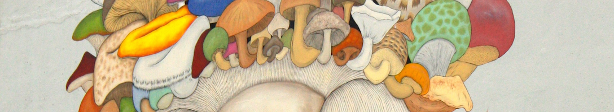
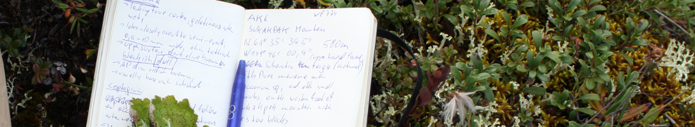

Philipp Resl
recent news
Our Science Paper on Basidiomycete yeasts in Ascomycete Macrolichens is published: Read it here and an "in depth" article here.
Our Molecular ecology paper was featured in a Perspective Article by Christoph Scheidegger in the latest issue of Molecular Ecology: Read it here.
Molecular Ecology paper out - Our paper on cyanobacterial acquisition in Placopsis is available online early. Get it here.
Ostropomycetidae paper out - Our paper on phylogenetic hypothesis testing in Ostropomycetidae (Ascomycota) is out. Get it here for free
Barcoding Rinodina - A little side-project I am involved in. The Austrian Barcoding of Life Initiative also includes lichens now
Quo vadis substrate specificity - The poster presented at the ECFG12 in Seville in March 2014 can be downloaded here
{kind=link}
How do lichens grow - Article about our Austrian science fund project published in the newspaper derStandard.
about
I am a PhD student at the University of Graz (Austria) supervised by Toby Spribille and Helmut Mayrhofer. My reasearch is focused on a special form of mutualism in the kingdom of fungi, commonly called lichens. I combine classical lichenological work (fieldwork, ecology and microscopy) with phylogenetics, genomics and transcriptomics to disentangle phylogenetic relationships and characterize evolutionary patterns in this group of fungi.
research
Phylogenetics and Taxonomy
My phylogenetic work is centered in the Ostropomycetidae one of the two subclasses of Lecanoromycetes comprised mostly of crustose lichens. Currently my work is focused on the order Baeomycetales and even more specific on the genera Trapelia and Trapeliopsis. To support taxonomic hypotheses I combine the latest phylogenetic analyses with classical lichenological work.
Adaptive evolution and Comparative methods
I use various statistical models to analyze the evolution of characters observed in lichenized fungi. I am specifically interested in the different evolutionary consequences for highly specialized versus generalist lineages.
Comparative Genomics
In my comparative genomics work, I search in several newly sequenced fungal genomes for signs of selection and cabohydrate active enzymes to identify adaptive processes in these species.
publications
2016
Spribille, T., Tuovinen, V. Resl, P., Vanderpool, D., Wolinski, H., Aime, M. C., Schneider, K., Stabentheiner, E., Toome-Heller, M., Thor, G., Mayrhofer, H., Johannesson, H., McCutcheon, J. P. (2016): Basidiomycete yeasts in the cortex of ascomycete macrolichens. doi:http://dx.doi.org/10.1126/science.aaf8287
Schneider, K., Resl, P. , Spribille, T. (2016): Escape from the cryptic species trap: lichen evolution on both sides of a cyanobacterial acquisition event. Molecular Ecology Accepted Manuscript. doi:10.1111/mec.13636
2015
Resl, P., Schneider, K., Westberg, M., Printzen, C., Palice, Z., Thor, G., Fryday, A., Mayrhofer, H., Spribille, T. (2015): Diagnostics for a troubled backbone: testing topological hypotheses of trapelioid lichenized fungi in a large-scale phylogeny of Ostropomycetidae (Lecanoromycetidae). Fungal Diversity (in press)
Schneider, K., Resl, P., Westberg, M., Spribille, T. (2015): A new, highly effective primer pair to exclude algae when amplifying nuclear large ribosomal subunit (LSU) DNA from lichens. Lichenologist (in press)
2014
Spribille, T., Resl, P., Ahti, T., Pérez-Ortega, S., Mayrhofer, H., Lumbsch, H.T. (2014): Molecular systematics of the wood-inhabiting, lichen-forming genus Xylographa (Baeomycetales, Ostropomycetidae) with eight new species. Symbolae Botanicae Upsalienses 37(1): 1-87.
Contact
Philipp Resl
Institute of Plant Sciences
University of Graz
Holteigasse 6
A-8010 Graz
Austria
E-Mail:
get it here
© 2016 Philipp Resl - This is a free website template by Rick Waalders